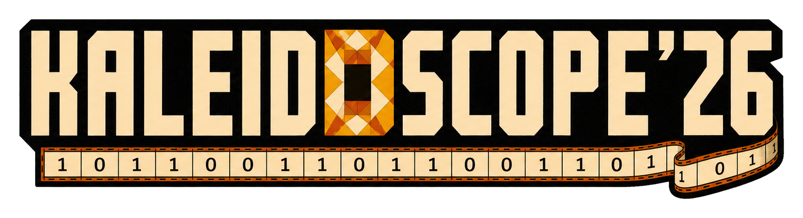
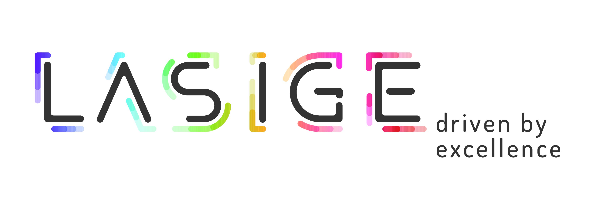
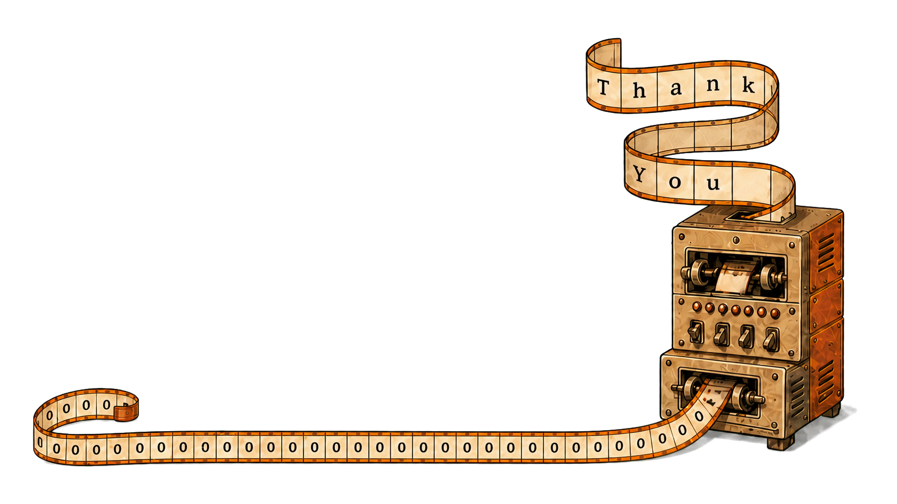

Dmytro Gavinsky
Computational evolvability (as defined by L. Valiant)
An exposition of Valiant’s notion of computational evolvability and the structural consequences that emerge from its formal framework.
Alas, no videos

Complexity as a Kaleidoscope 2026 brought researchers to Lisbon from 30 July to 1 August 2026, immediately before CCC’26, for three days devoted to seeing familiar ideas from someone else’s angle.
The experiment reversed the usual research-talk format. In the spirit of a Bourbaki seminar, speakers did not lecture about their own latest results: they paid homage to work they admired, explaining its proofs and intuitions, the experience of thinking about the topic, and the history and context that made it matter.
Participants also offered five-minute tributes to someone else’s theorem, result, or paper, and brought favorite open problems for a collective session—small kaleidoscope turns meant to encourage generous exposition, curiosity, and conversation.
An exposition of Valiant’s notion of computational evolvability and the structural consequences that emerge from its formal framework.
An exciting line of recent work has given strong monotone circuit lower bounds for a number of natural problems. I will give a unified exposition of the best known monotone circuit lower bounds for perfect matching, clique and the strongest monotone lower bounds for an explicit function that depends on n variables. The lecture will be accompanied by lecture notes that will be posted on the arxiv.
We shall try to follow Jakob Steiner’s principle: “Calculating replaces, while geometry stimulates, thinking.” Two classical methods of compression towards structure are Steiner symmetrization in Euclidean space and shifting in the discrete hypercube. Both transform objects to a canonical form while preserving some of their properties. The goal of this lecture is to explore the elegance and power of these methods (focusing on the Euclidean setting).
List-decoding and list-recovery are notions in coding theory that have applications throughout complexity theory. In this talk, I’ll survey a recent line of work in coding theory that has led to breakthroughs in this area, including but not limited to these three papers. If there is time, I’ll discuss some implications beyond coding theory.
The Nisan-Wigderson generator is a central construction in complexity theory. I will talk about the generator and its applications in areas such as information-theoretic pseudorandomness, structural complexity, learning, meta-complexity and algebraic complexity.
Watch the five-minute sessions: Day 1 · Day 2 · Day 3
Relating non-local quantum computation to information theoretic cryptography
Watch talk ↗The photograph captures many of us together; the complete workshop list follows.
To our five speakers for taking the extra trouble of preparing a talk about someone else's work; to every five minute speaker for sharing something they like; to all participants for their priceless attention; and to all the local helpers for making it possible for us to geek out.
This workshop was funded by the European Union (ERC, HOFGA, 101041696). It was also funded by national Portuguese funds through FCT — Fundação para a Ciência e a Tecnologia, I.P., under the LASIGE Research Unit, ref. UID/00408/2025, DOI 10.54499/UID/00408/2025.
Views and opinions expressed are those of the author(s) only and do not necessarily reflect those of the European Union or the European Research Council. Neither the European Union nor the granting authority can be held responsible for them.

